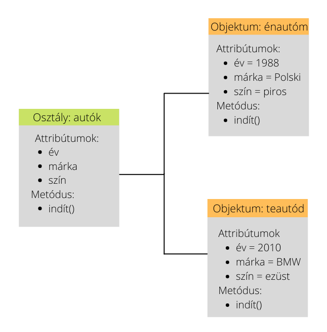

Objektumorientált programozás
Az objektum orientált programozás alapelveinek, és szemléletének megismerése. A OOP alapú programozás
begyakorlása, az osztály és objektum alapú programozás bemutatása. A Java nyelv alapjainak és OOP elemeinek az
elsajátítása.

- Objektum orientált programozás fogalma, alapelvei.
- Osztálydefiníció 1: osztály tagjai,példányosítás, hivatkozás az osztály tagjaira. Láthatósági módosítók.
Névterek. Konstruktor, destruktor. Objektum inicializáló. Példány élettartama
- Osztálydefiníció 2: metódusok, túlterhelés (overloading), paraméterátadási módok. Tulajdonságok.
- Öröklődés, polimorfizmus. Metódusok felüldefiniálása (overriding). Virtuális metódusok. Lezárt osztályok és
metódusok.
- Referencia változók. Referenciák statikus és dinamikus típusa. Típuskonverzió.
- Beágyazott osztályok, interfész tagok. Enum típus
- Kivételkezelés. Fájlkezelés.
- Osztályok közötti kapcsolatok, osztálytervezési szempontok.
- Generikusok. Operátor overloading. A System névtér.